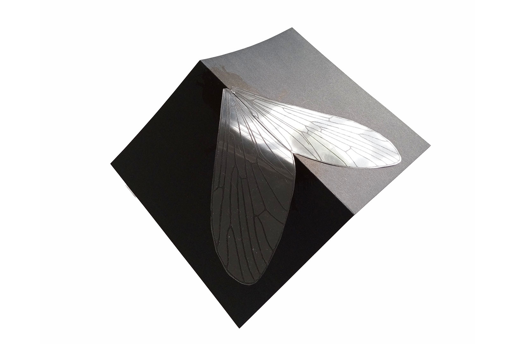
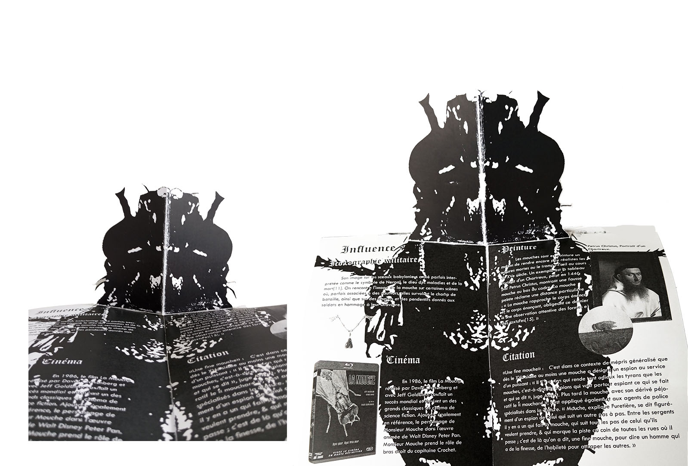
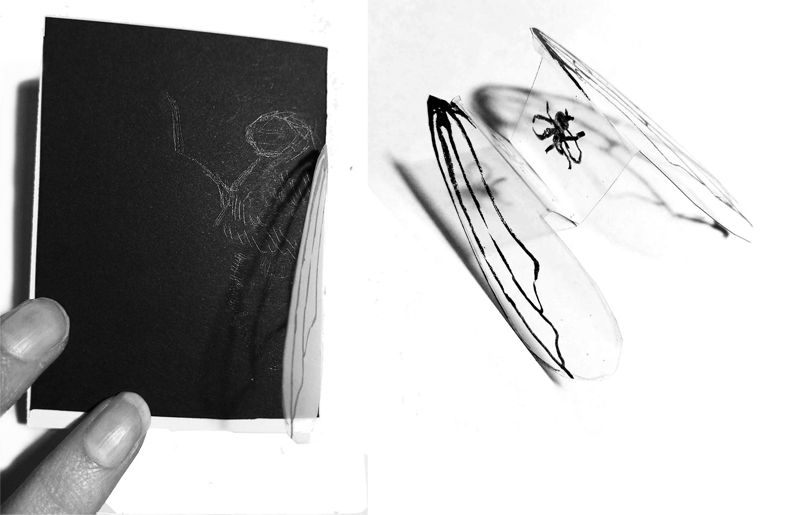

Projet d'édition sur la thématique du minuscule à Travers la reliure même . A Travers une reliure à glissière, j’ai expérimenté avec le volume pour présenter les aspects de la mouche, ici en particulier les ailes, comme quelque chose de majestueux. Cependant sur cette même surface, la présentation de la mouche descend, présenter comme le cadavre d'un nuisibles mort écrasé.


